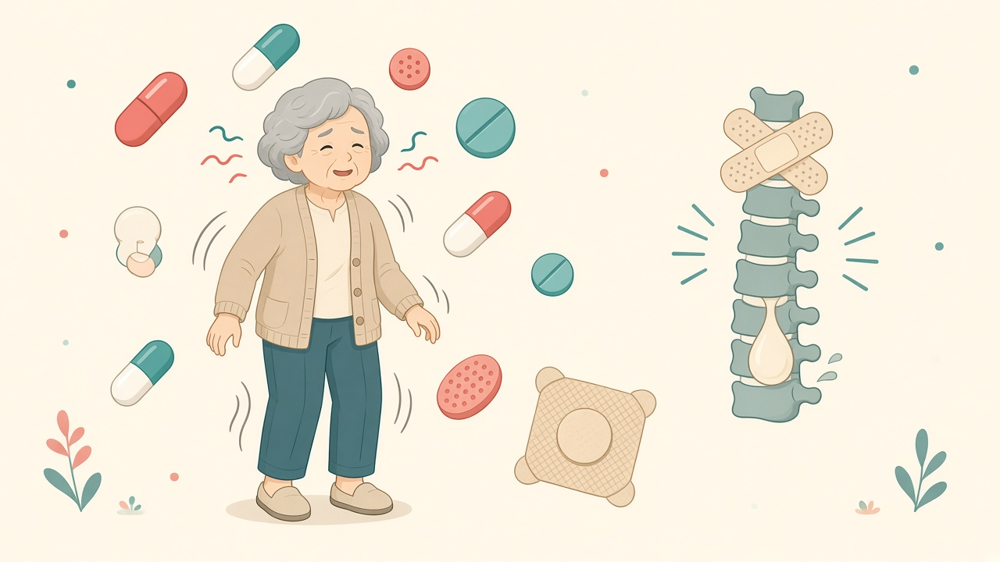
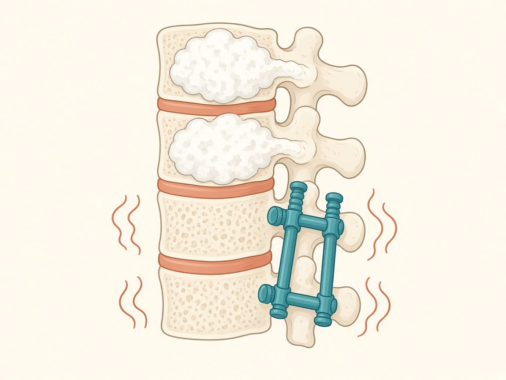
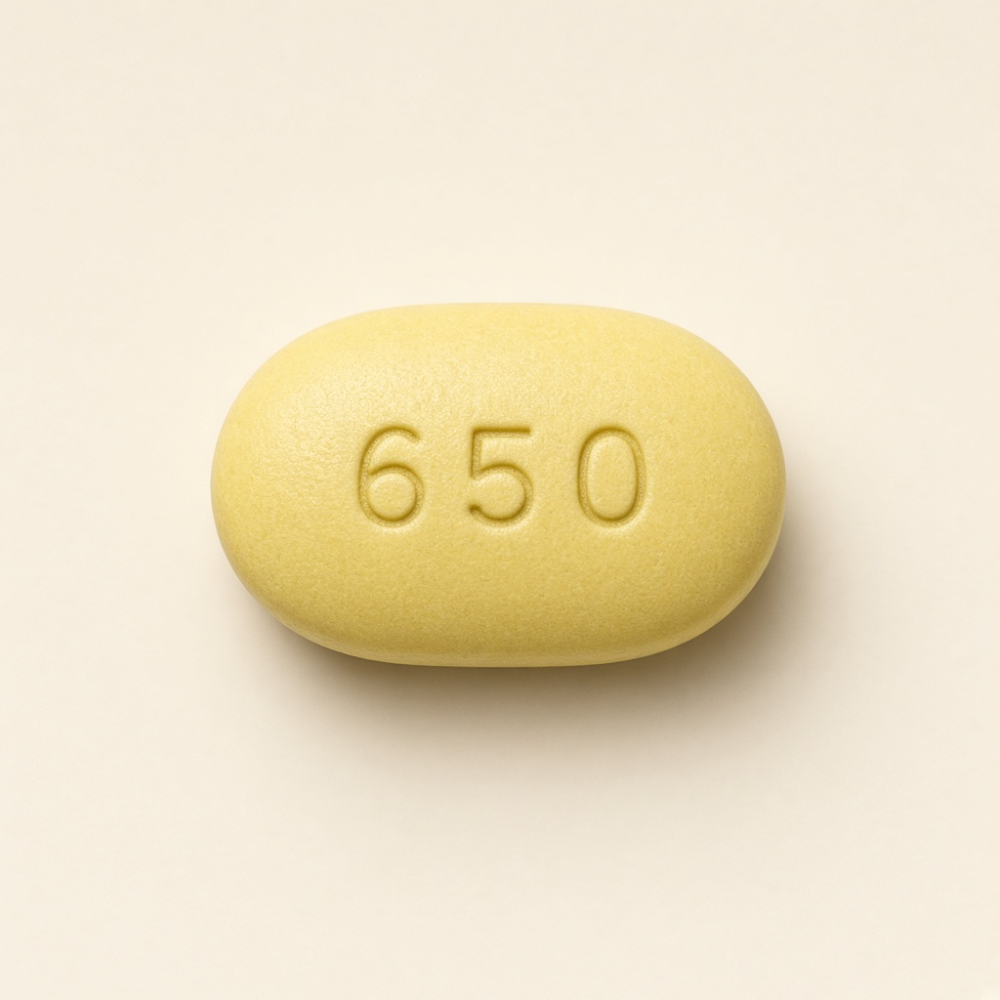
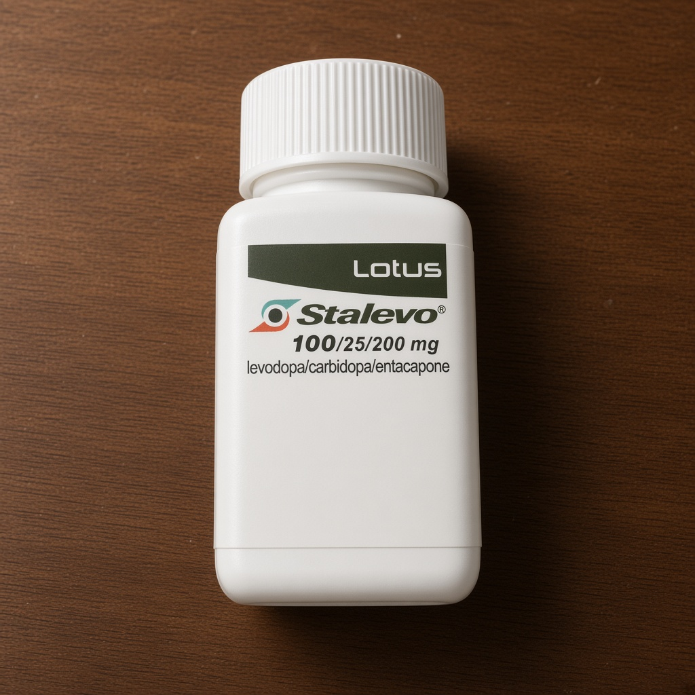
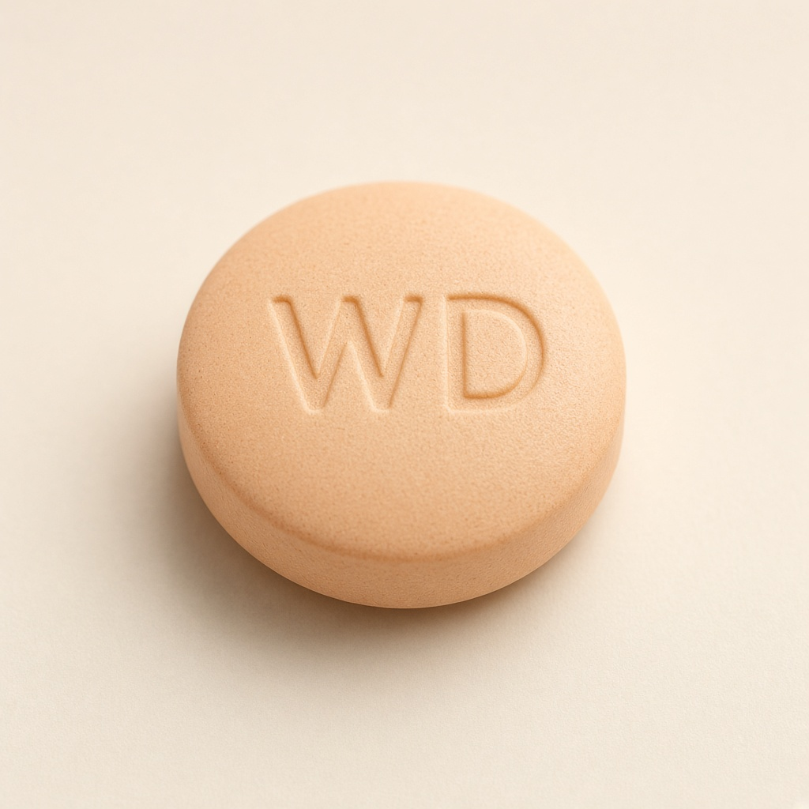
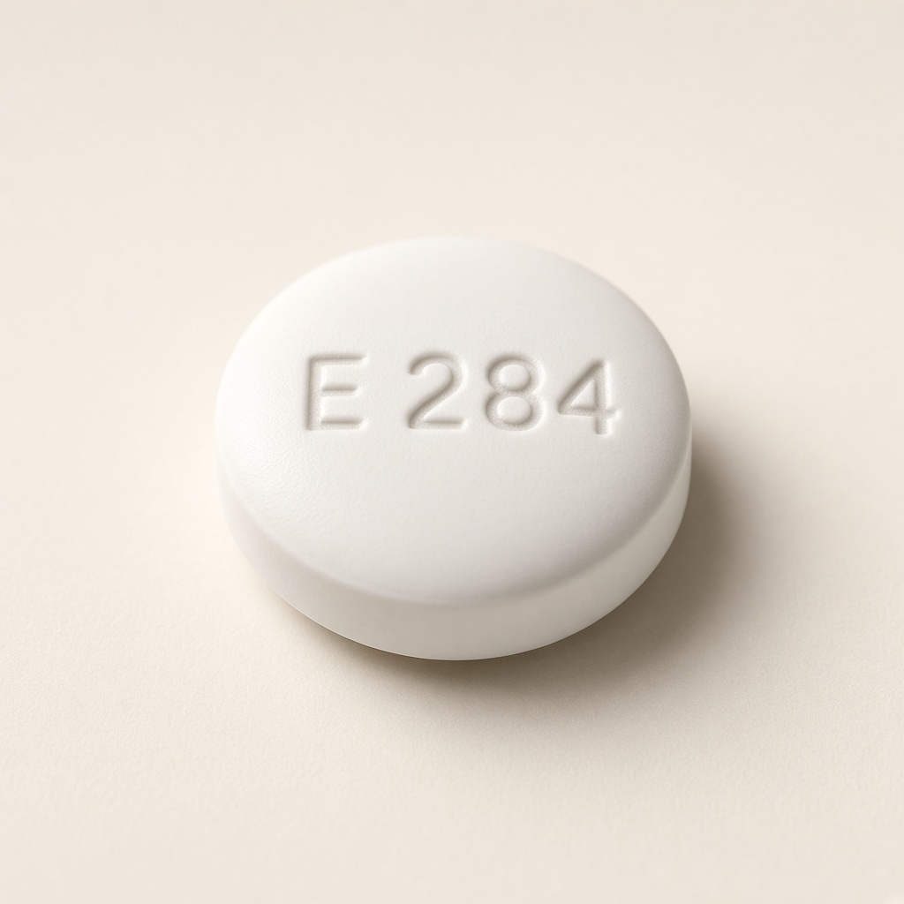
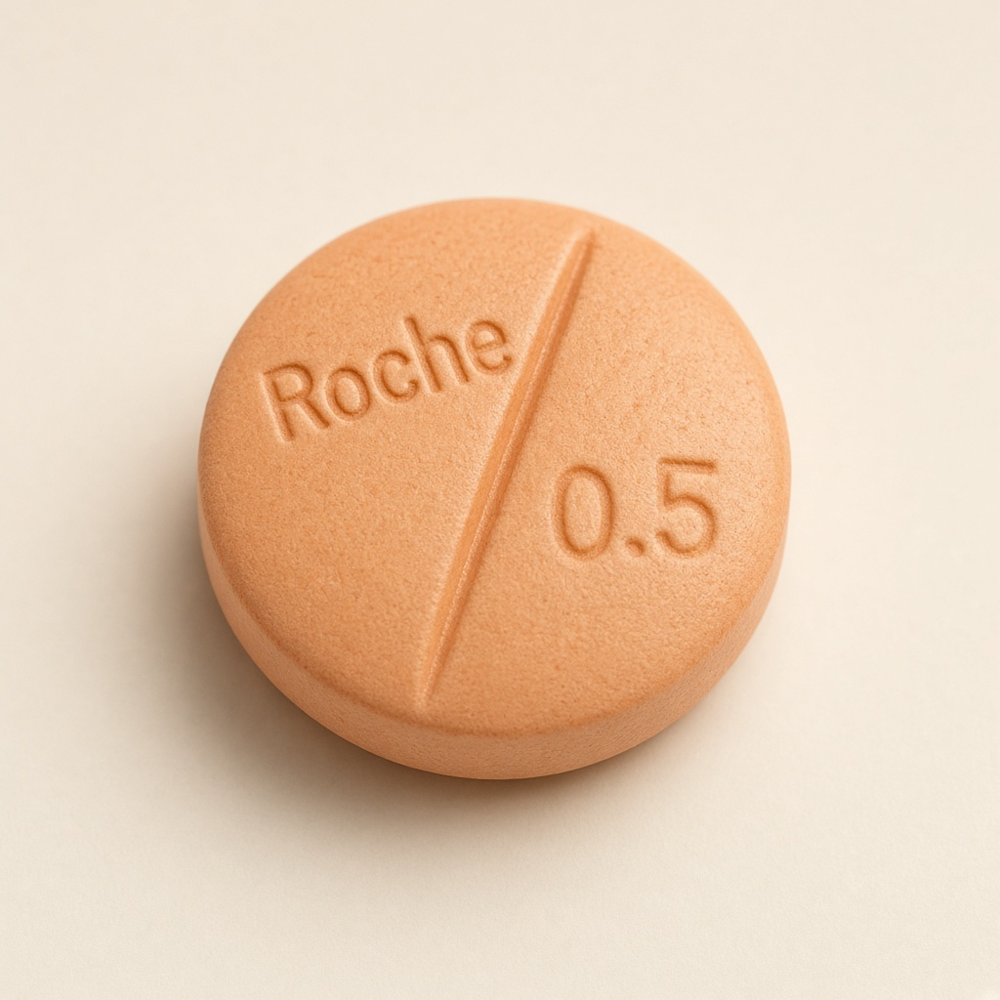
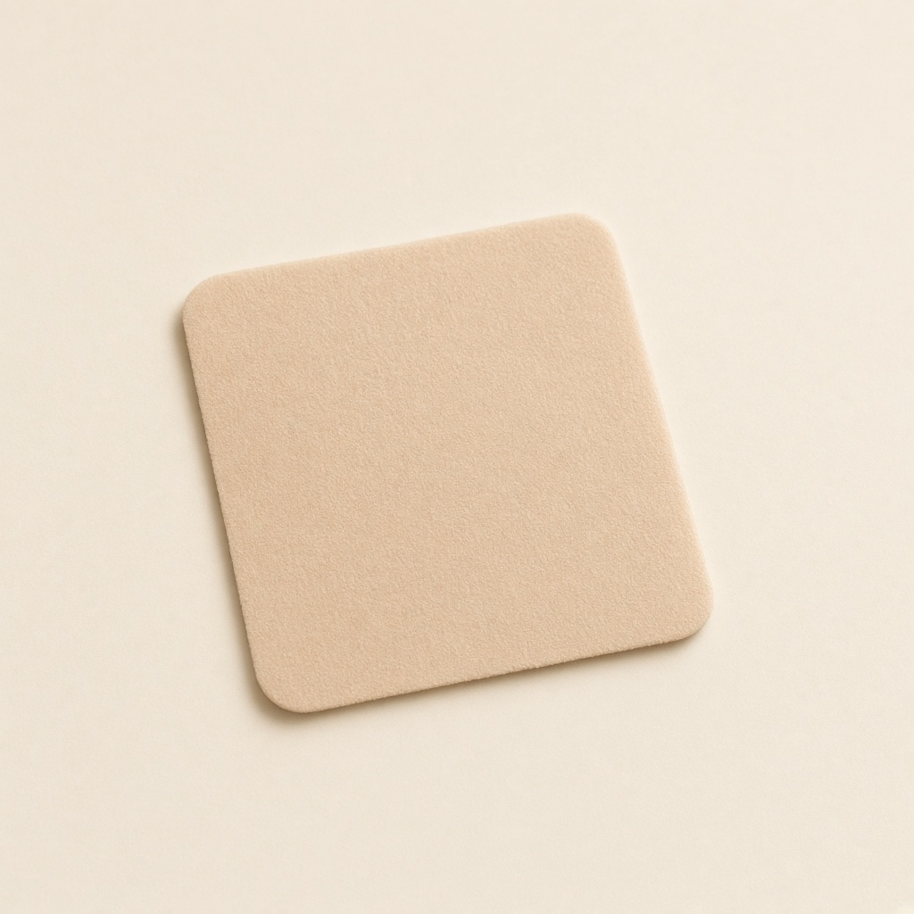
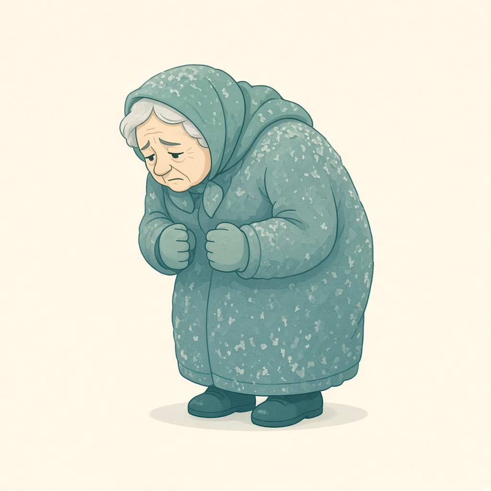
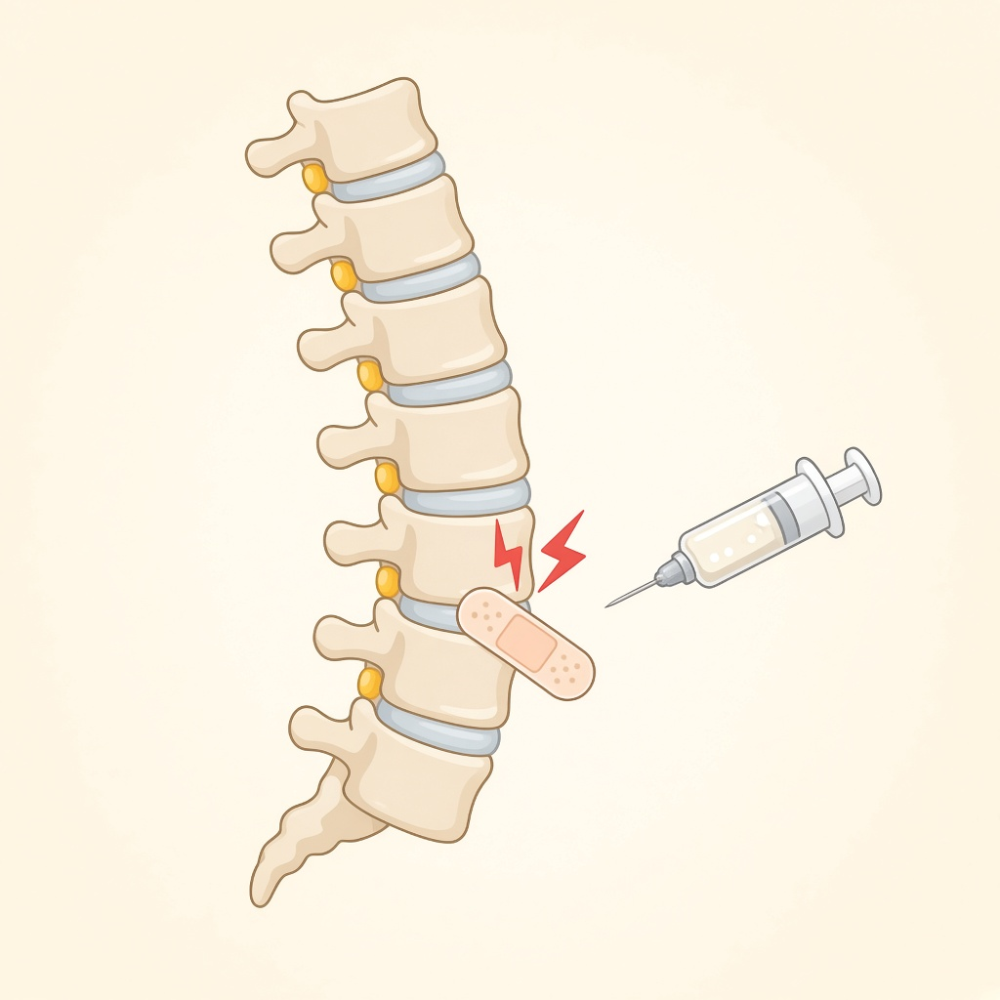

整合結論

藥疊太多時，身體會一直扭。下面這節脊椎已經打過骨水泥、又有鋼釘，最怕被這樣晃。
一句話
現在不是心寧美太重，是同一時間疊了太多會放大異動的藥。整天扭動，會把打過骨水泥、又開過刀的脊椎反覆拉扯。病人說的神經痛，很大一部分可能是「異動在扯舊傷」，不是再加止痛藥就能好。
LEDD＝左旋多巴當量。數字是依家裡手寫時間表估算：心寧美 300 mg ＋始立約 4–5 顆＋安滿達 400 mg＋愛可穩 100 mg＋賣力膜 8 mg。家屬若在 8 mg 上再加半片，還會再高一截。
現在最重要
回診前不要自行一次停好幾顆。突然停安滿達、停左旋多巴，可能全身僵硬、高燒、肌肉溶解，比異動更急。正確做法是：醫師同意後，一次只改一樣、隔一到兩週再改下一樣。
之前的疾病史
寶建醫院骨科紀錄（2026 年 5 月）。公開頁不放有姓名的 X 光原圖，用示意圖說明現在這節腰在怕什麼。

對應 5/29 術後 X 光：上面兩節是補骨水（椎體成形），下面有螺釘與鋼棒。異動等於一直搖這組內固定。
5/20 左右
家裡已在穿腰部護帶，代表開刀前背部就已經不穩。
5/28 急診住院
診斷：第一及第二腰椎壓迫性骨折、右肩滑囊炎。骨科李炫昇醫師。
5/29 手術
椎體成形（補骨水）＋自費可擴張椎體系統；同時做右肩關節穿刺。同意書有註明麻醉風險（心、腦、肺栓塞、肺部感染）。
5/30 出院
醫囑：術後需背架使用、休養三個月（大約到 8 月底）。
8/21
大同神經內科開 28 天帕金森藥（心寧美、安滿達、愛可穩、利福全）。家裡手寫時間表還疊了始立與賣力膜。
8/29 再住院
寶建感染科，主訴發燒。三個月養護期剛好結束前後。住院單繼續自備帕金森藥，並加抗生素、點滴、吸入、止痛與安眠藥。
現在（9 月）
估計體重約 42 kg，仍喊神經痛。鋼釘與骨水泥都還在，最怕異動、跌倒再造成鄰近節骨折或內固定鬆脫。
跟用藥的關係
壓迫性骨折常見於高齡、瘦、跌倒或異動。張醫師說過藥太重吃一陣子才異動到開脊椎。現在若還是始立加心寧美、安滿達 400 mg、賣力膜，等於在搖一套剛打好的腰。右肩滑囊炎也會因跌倒、僵硬或異動再痛。
認藥圖示（依藥袋外觀）
對照藥袋上的外觀說明繪製，方便家人對藥。不是藥單原圖（原圖有姓名）。

心寧美 Sinemet
黃色橢圓錠，一面「650」。每次半粒、約每 4 小時一次。先留這支。

始立 Stalevo
瓶裝 100/25/200。手寫是跟心寧美同一時間吃，等於劑量重疊。建議先拿掉。

安滿達 Amanda
淺橘圓錠，印「WD」。目前一天 4 粒＝400 mg，對 42 kg 高齡過重。

愛可穩 Equfina
白圓膜衣錠，印「E 284」。早上 2 粒＝100 mg。確認沒有吃成早晚各 2 粒。

利福全／瑞多寧
橘色圓錠、中間有刻痕。藥袋是每次半粒；手寫若吃整粒會變成兩倍。

賣力膜 Neupro
膚色方形貼片。住院 8 mg，家屬又加半片。先拿掉多加的那半片。
為什麼會神經痛
5 月底才做完 L1、L2 補骨水與內固定，8 月底才滿三個月休養。病人說的神經痛，要先分清楚是扭、是僵，還是這節腰本身。
痛 A · 異動期
藥太多時：扭、晃、坐不住。鋼釘和骨水泥被反覆剪切，會像電、刺、抽。再加肌鬆或神經痛藥常常治標不治本。

痛 B · 關機期
藥不夠或亂停時：僵、抽筋、整條背扳住。這種痛要靠穩定的心寧美，不能先砍心寧美。

痛 C · 脊椎結構
L1、L2 壓迫性骨折、骨水泥、螺釘，加上右肩滑囊炎，本來就會痛。異動沒減，鄰近節比較容易再骨折。
8 月底發燒住院時開過 Lyrica、舒肌痛、佑克、兩種安眠藥。對 42 kg 高齡會更軟、更昏、更容易跌，跌一次對剛打好的腰很傷。
各藥副作用（跟這位病人特別有關的）
建議先保留
心寧美 Sinemet（左旋多巴 300 mg／日）
走路、翻身、吞嚥的底。目前是每 4 小時半粒，單次劑量其實不大。
副作用：峰值異動、噁心、低血壓、幻覺（高劑量時）。
和神經痛：吃完就大扭，痛會在異動時出現；若亂減，關機僵硬一樣會讓脊椎痛。所以減量草案先不動這支。
最該先拿掉重疊
始立 Stalevo（約 4–5 顆／日）
每顆含左旋多巴 100 mg + 卡比多巴 25 mg + 恩他卡朋 200 mg。手寫時間表是跟心寧美同一時間一起吃，等於一次吃 150 mg 左旋多巴，還被恩他卡朋再放大約三成。
副作用：異動明顯變重、腹瀉、尿色變深、低血壓。
和神經痛：這是把異動推上去的主因之一。異動越兇，脊椎舊傷越痛。
高齡 42 kg 幾乎是上限中毒區
安滿達 Amantadine 400 mg／日
標示不得超過 400 mg；超過 200 mg 毒性就上升。75 歲、腎清除差、體重 42 kg，常用往往只有 100–200 mg。
副作用：幻覺、混亂、腳腫、網狀青斑、口乾、解尿困難、肌躍（身體突然跳一下）、跌倒。
和神經痛：肌躍很像神經電擊；腳腫、走路不穩也容易再跌、再傷脊椎。這支必須很慢減，不能隔天停光。
會放大異動
愛可穩 Safinamide 100 mg／日
已是核准最大量。住院單曾寫「早晚各 2 粒」（等於 200 mg），超過仿單上限，回家手寫是早上 2 粒（100 mg）。先確認沒有吃成一天兩次。
副作用：異動、失眠或嗜睡、頭暈、頭痛、姿勢性低血壓、跌倒。
和神經痛：本身不傷神經，但會讓左旋多巴的異動更明顯，間接拉扯脊椎。
家屬加了半片
賣力膜 Neupro（住院 8 mg；家屬加半片）
多巴胺貼片，24 小時持續給藥。晚期帕金森核准最大常到 8 mg；瘦弱高齡對激動劑更敏感。
副作用：異動、想睡、幻覺、皮膚癢、腳腫、噁心、姿勢性低血壓。
和神經痛：貼片整天都在推多巴胺，異動不一定只在吃藥後，脊椎會整天被晃。
跌倒風險
瑞多寧／利福全 Clonazepam
藥袋是每次半粒、一天四次（1 mg）。手寫寫「1 顆」四次，若吃的是整粒 0.5 mg，就變成 2 mg／日。住院還加睡前安規 0.5 mg，等於雙重安眠藥。
副作用：肌肉變軟、嗜睡、混亂、流口水、吸入性肺炎、成癮、突然停藥會抽搐。
和神經痛：不治療神經痛。它讓人軟、跌，對補骨水泥後的脊椎是危險因子。若要用，多數只留睡前 0.25–0.5 mg。
住院有、回家要問還有沒有在吃
止痛／神經痛相關
- Lyrica 75 mg 睡前：神經痛藥。副作用是腫、昏、跌、視力模糊。對「異動拉脊椎」效果有限。
- 舒肌痛 Soma：含氯唑沙宗（肌鬆）+ 普拿疼。和安眠藥一起會更軟，也傷肝。治不了神經根痛。
- 佑克 60 mg：消炎止痛。老人有胃、腎、心血管風險。
- 普達 cilostazol：擴血管、抗血小板。頭痛、心悸、容易瘀青；若還要動脊椎相關處置，一定要讓醫師知道。
- 脈優 5 mg：降壓。和帕金森藥一起更易低血壓、腳腫（和安滿達疊加）。
原本劑量 vs 建議減量
「建議」是給醫師看的草案，不是現在立刻改的藥單。
心寧美
原本：半粒 × 6 次，左旋多巴 300 mg
建議：維持不變
始立
原本：約 4–5 顆，再加 400–500 mg 左旋多巴，還跟心寧美同時吃
建議：停。不要跟心寧美疊在同一時間
安滿達
原本：100 mg × 4 次，共 400 mg
建議：先 300，再 200。高齡目標常是 100–200 mg
愛可穩
原本：早上 2 粒＝100 mg。住院單曾寫早晚各 2 粒
建議：改 1 粒＝50 mg。先確認沒有吃成一天兩次
賣力膜
原本：住院 8 mg，家屬又加半片
建議：先拿掉多加的半片，再跟醫師商量 8→4 mg
利福全／瑞多寧
原本：手寫 1 顆 × 4 次；藥袋是半粒 × 4 次
建議：先改回半粒，再收到只睡前 0.25–0.5 mg
安規／Lyrica／舒肌痛
原本：住院有併用
建議：請醫師重評，能少則少，防跌倒
分三階段減量（一次只改一樣）
回診前 · 先別動
維持目前吃法，避免關機。能做的是：量體重、拍異動影片、列出始立到底還吃幾顆、賣力膜實際貼幾毫克。
第一階段 · 只拿重疊（約 1 週）
風險最低：停始立（或先停白天、留一個最關機時段）、賣力膜不加半片、利福全改回藥袋半粒、愛可穩確認一天只早上 2 粒。
拿掉始立整顆
第二階段 · 降安滿達與愛可穩（約 2–4 週）
安滿達先停下午 13:00 那顆（400→300），一到兩週後再停 17:00 那顆（→200）。愛可穩改早餐 1 粒（50 mg）。
若這階段關機太明顯（僵、吞嚥差、發高燒），立刻停在這一階、聯絡醫師，不要繼續減。
第三階段 · 貼片與安眠藥（約再 2–4 週）
- 賣力膜 8 mg → 4 mg（或只留醫師認為必要的劑量）。
- 利福全白天停，只留睡前半粒或 1/4 粒。
- 安規、Lyrica、舒肌痛能停則停，減少跌倒。
- 心寧美六次半粒原則上仍保留。
9/23 回診可帶這些
- 實際體重（坐秤也可），不要再用估計。
- 吃飯、走路、躺床各拍 20–30 秒異動影片。
- 分清楚：痛是「扭的時候」還是「僵的時候」。
- 始立現在一天幾顆、賣力膜貼幾毫克。
- 有無腳腫、幻覺、網狀紅斑、尿色深、肌肉痛。
- 請抽肌酸酐／eGFR（安滿達靠腎排）；若肌肉很痛可加 CK。
- 告訴醫師：2026/5/29 寶建骨科做 L1、L2 椎體成形＋內固定，右肩滑囊炎穿刺；8 月底才滿三個月休養，怕異動再傷神經與鋼釘。